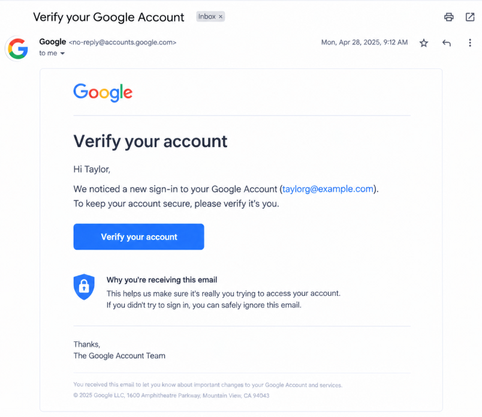

Legitimate Example

A legitimate service provides security notifications through its official app or website. You can independently open the service, review your account status, and follow its established security process without relying on a suspicious message link.